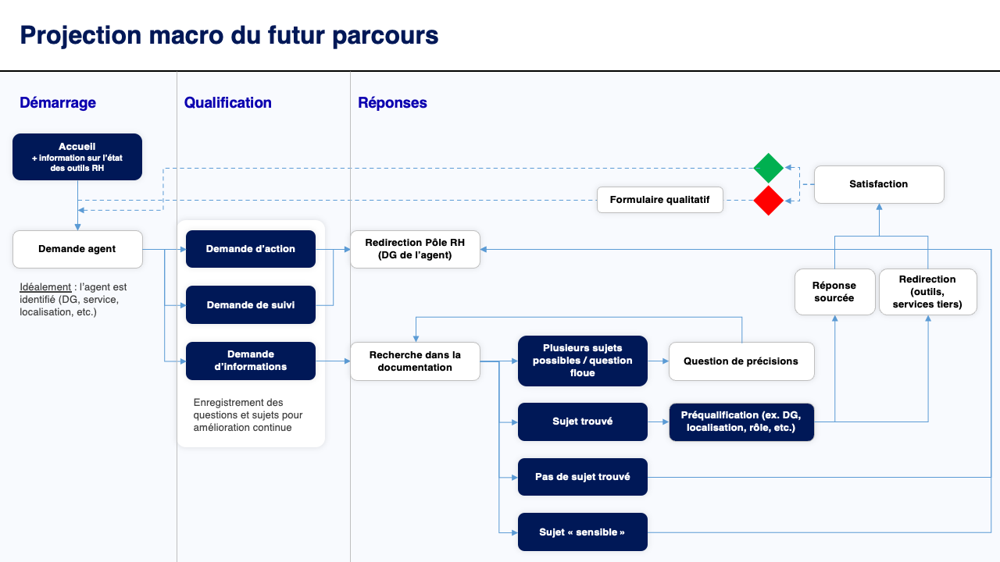
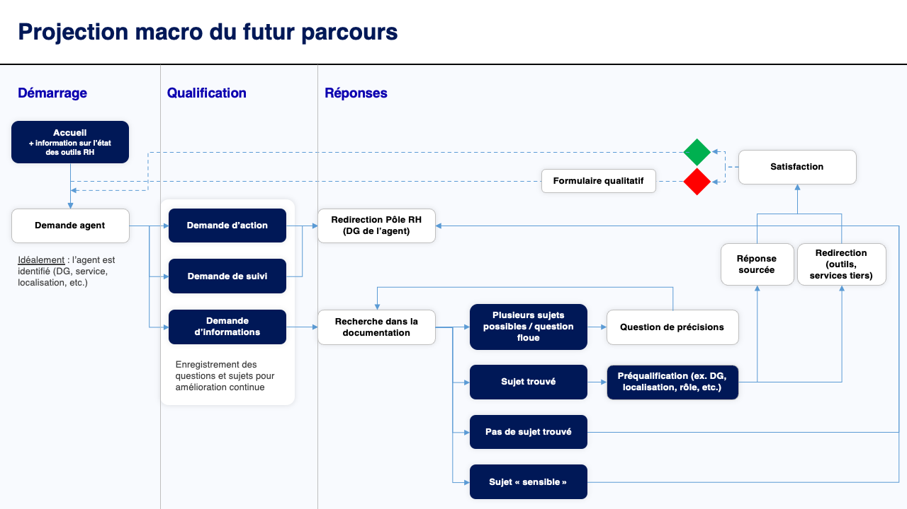

Assistant RH
Client : Banque de France
Année : 2024 - 2024 (2 mois de recherche, en cours)
Contexte
Les équipes en charge de la gestion RH reçoivent un nombre de demandes croissantes des collaborateurs et constatent que presque une demande sur deux pourraient être résolue par les sites et documents RH. Par ailleurs, certaines demandes se retrouvent mal orientées en raison de périmètres d'activité très silotés. Une expérimentation avec l'IA générative débute pour tester un concept d'assistant qui puisse répondre aux questions d'après la documentation disponible. La population cible représente environ 10 000 collaborateurs.
En tant que Business Designer au Lab d'innovation de la Banque, je suis actuellement en charge de la phase d'exploration qui doit identifier la désirabilité, fiabilité et faisabilité de ce concept.
A noter : les éléments relatifs à la faisabilité et viabilité ne seront pas présentés ici pour des raisons de confidentialité.
Objectifs & mesures de succès
La question de notre recherche sera : Comment pourrions-nous rendre facilement accessible les informations RH aux utilisateurs dans un agent conversationnel ?
Objectifs pour les équipes RH :
Réduction du temps dépensé sur des sujets récurrents pour se consacrer à de vraies anomalies/problèmes de fond.
Mesure de succès : identifier le niveau de réduction possible des demandes à faible valeur ajoutée.
Objectifs pour les collaborateurs :
Obtention rapide et directe des informations actualisées sur les besoins/problématiques des agents pour tout sujet RH déjà consigné dans les ressources de la DGRH.
Redirection de la demande au service idoine en cas de recherche insatisfaisante.
Mesures de succès : une réponse en moins de 30 secondes, un taux de réussite suppérieur à 85% et une satisfaction suppérieure à 7/10 (CSAT).
Recherche et découvertes
Pour les expérimentations, la démarche utilisée est proche de celle des Design Sprints qui se déroule dans un temps court, ici 2 mois environ. Dans un premier temps, pour identifier les principaux gains business, une recherche avec les experts à été menée : les différents services et contacts RH et les experts du SI RH. Cette phase permet de recueillir, par "proxy", les difficultés rencontrées par les utilisateurs. Bien que cela ne soit pas suffisant, cela nous offre l'opportunité de progresser rapidement vers un prototype testable.
 Une recherche secondaire, de type revue de littérature et retours d'expériences, est conduite pour anticiper les difficultés et adopter les bonnes pratiques pour des cas similaires. Ici, la technologie d'IA Générative sera une thématique structurante pour la réussite du projet.
Une recherche secondaire, de type revue de littérature et retours d'expériences, est conduite pour anticiper les difficultés et adopter les bonnes pratiques pour des cas similaires. Ici, la technologie d'IA Générative sera une thématique structurante pour la réussite du projet.
 Dans notre cas, la technologie choisie semble adaptée aux objectifs du projet. Cependant, plusieurs éléments clés ont été identifiés, et ils auront un impact majeur sur le succès d'un assistant RH :
Dans notre cas, la technologie choisie semble adaptée aux objectifs du projet. Cependant, plusieurs éléments clés ont été identifiés, et ils auront un impact majeur sur le succès d'un assistant RH :
- La centralisation des informations est étroitement liée à la satisfaction des utilisateurs, mais elle comporte également des conséquences importantes : une gouvernance des informations et des parcours RH seront nécessaires, ce qui peut représenter un travail organisationnel conséquent.
- Environ 70% des demandes ne peuvent être traitées qu'à partir des informations du dossier d'un collaborateur, qui requiert une intervention humaine. Ces demandes doivent être redirigées vers les bons contacts. Cela signifie que les sujets et les contacts doivent pouvoir être identifiés efficacement par des référentiels.
- Les réponses doivent s'adapter à la situation d'un collaborateur sans utiliser ses informations personnelles. Certains profils ont des règles RH différentes selon leur métier, direction générale, géographie, etc. Un assistant doit pouvoir contextualiser sa réponse lorsque nécessaire pour être réellement performant.
- Un assistant conversationnel devra permettre de capitaliser sur les données échangées pour aider à l'amélioration continue des documents et thématiques du domaine RH.
- La réponse d'un service RH peut faire office de jurisprudence. Ainsi, il est nécessaire de concevoir un assistant qui soit purement factuel (citations de sources) et qui ne doit pas autoriser l'interprétation de documents juridiques. Il doit en revanche traduire ces documents pour les rendre compréhensibles pour les collaborateurs.
Cette dernière mention est particulièrement importante, si ce sujet n'est pas correctement traité il crée un risque de contentieux qui pourrait générer des coûts supplémentaires (organisationnels et financiers) conséquents.
Most Valuable Product (MVP) et préparation des tests utilisateurs
A la suite de la recherche primaire et secondaire, des ateliers de co-conception et priorisation sont menés avec les parties prenantes du business pour définir le MVP.
 
Afin de vérifier la pertinence du MVP, un prototype interactif fonctionnel utilisant les vraies données du périmètre RH sera testé avec les utilisateurs. Les mesures permettant de vérifier le succès sont définies en amont d'après les standards avec des mesures légèrement suppérieures pour s'adapter au contexte de l'innovation (périmètre restreint, volume de données inférieures à la production, etc.)

Afin de vérifier la pertinence du MVP, un prototype interactif fonctionnel utilisant les vraies données du périmètre RH sera testé avec les utilisateurs. Les mesures permettant de vérifier le succès sont définies en amont d'après les standards avec des mesures légèrement suppérieures pour s'adapter au contexte de l'innovation (périmètre restreint, volume de données inférieures à la production, etc.)

Et ensuite ?
Les prochaines étapes pour l'expérience utilisateur consisteront non seulement à tester le prototype, mais aussi à se préparer à intégrer le futur assistant, à condition que ce dernier soit convaincant, dans l'ensemble du parcours de l'écosystème RH.
Une recherche utilisateur complémentaire sera nécessaire pour identifier toutes les difficultés qui ont contribué à créer la situation initialement décrite par les experts.